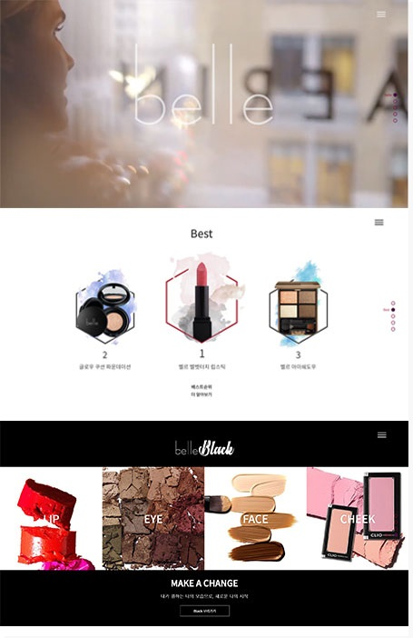

01Over View
소비자들을 끌어당길 수 있는 화장품 페이지 제작화장품 브랜드 페이지 제작을 하였습니다. 그 안에서도 두가지 느낌으로 나눠 모든 사람들이 만족할 수 있는 느낌을 주고 싶었습니다.
white 페이지에서는 산뜻하고 깔끔한 느낌 black에서는 강령하고 강조되는 느낌을 주었습니다.



화장품 브랜드 페이지 제작을 하였습니다. 그 안에서도 두가지 느낌으로 나눠 모든 사람들이 만족할 수 있는 느낌을 주고 싶었습니다.
white 페이지에서는 산뜻하고 깔끔한 느낌 black에서는 강령하고 강조되는 느낌을 주었습니다.